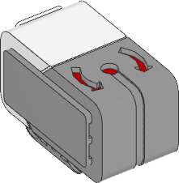

Gyroscopic Sensor

-
class GyroSensor(port)
LEGO® MINDSTORMS® EV3 Gyro Sensor.
- Parameters:
-
-
speed() → int: deg/s
Gets the speed (angular velocity) of the sensor.
- Returns:
Angular velocity.
-
angle() → int: deg
Gets the accumulated angle of the sensor.
- Returns:
Rotation angle.
-
reset_angle(angle)
Sets the rotation angle of the sensor to a desired value.
- Parameters:
angle (Number, deg) – Value to which the angle should be reset.